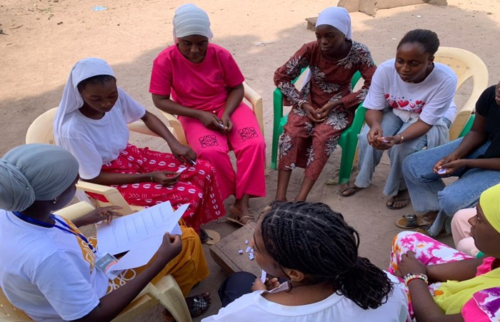

Plateforme de consultation des données, cartographie et analyse du système de réponse aux violences basées sur le genre.
Cette plateforme présente la cartographie des structures intervenant dans la prévention et la prise en charge des violences basées sur le genre dans la région de Kolda. Elle met à disposition une base de données structurée, une carte interactive et un espace d’analyse pour appuyer la coordination, l’orientation et la décision.
Le dispositif réunit des services étatiques et des organisations de la société civile, avec des rôles complémentaires dans la prévention, l’accompagnement psychosocial, la prise en charge, le référencement et la mobilisation communautaire.

Accède aux différents modules pour explorer les données, visualiser la couverture territoriale des services et analyser les principales tendances du système VBG dans la région.
Explore la répartition géographique des structures, visualise les départements ciblés et affiche les acteurs sous forme de points ou de heatmap.
Ouvrir la carteConsulte l’ensemble des structures dans un tableau détaillé avec filtres multi-critères sur les acteurs, les départements, les services et la couverture.
Voir la tableAccède aux KPI, aux graphiques, à l’analyse des gaps, à l’indice de couverture VBG et aux messages stratégiques issus de la cartographie.
Voir l’analyse